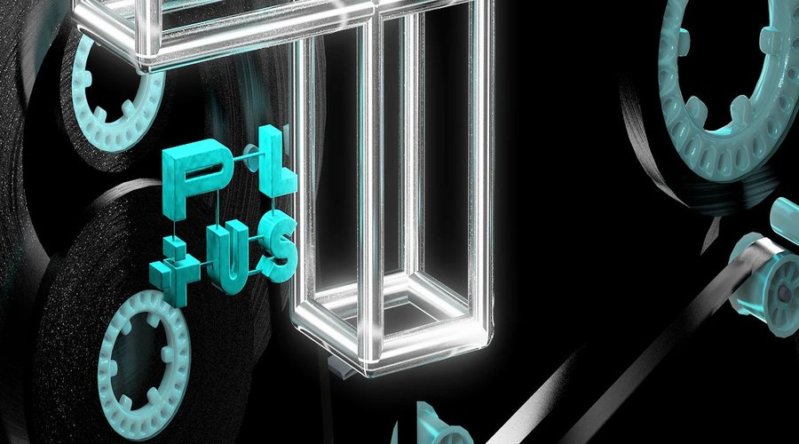
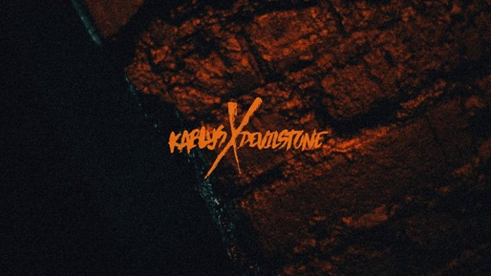
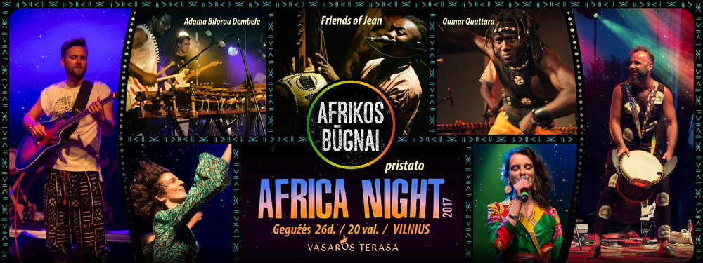

ARTĖJANTYS RENGINIAI
Royksopp
Data: 2017 m. birželio 16 d. 18:00–23:00
Vieta: Kalnų parkas
Elektroninės muzikos duetas Röyksopp pirmą kartą koncertuos Lietuvoje. Viena sėkmingiausių grupių Norvegijos istorijoje svečiuosis Vilniuje vyksiančiame festivalyje „Summer In The City“. Kasmet rengiamame didelės sėkmės sulaukusiame vienos dienos festivalyje taip pat koncertuos britų atlikėjas JP Cooper, estų elektroninės muzikos žvaigždė NOËP, ryškiausias pastarųjų metų Lietuvo scenos debiutas Daddy Was A Milkman ir alternatyviosios muzikos Solo Ansamblis. Festivalis „Summer In The City“ šįkart muzikos gerbėjus į sostinės Vilniaus Kalnų parką sukvies birželio 16 d.
DAUGIAU INFORMACIJOS

Africa Night 2017
Data: 2017 m. gegužės 26 d. 20:00
Vieta: Vasaros terasa
Kasmetinę pavasario pabaigą - vasaros pradžią perkusijos studija "Afrikos būgnai" pažymi solidžiai. Kviečiasi geriausius šių dienų afrikietiškos muzikos atlikėjus ir rengia koncertą "AFRICA NIGHT", kurio garsas, energija ir pozityvas užkrauna visus klausytojus metams į priekį iki sekančio pavasario.
Ir šis pavasaris nebus išimtis! Naujos šalys, nauji veidai, ir dar daugiau gerų emocijų! Burkina Faso, Dramblio Kaulo Krantas, Senegalas, Lenkija su afrikietiškos muzikos ambasadoriais priešakyje ir aišku perkusijos studija "Afrikos būgnai"!
DAUGIAU INFORMACIJOS

Plius Plius Plius Showcase
Data: 2017 m. gegužės 27 d. 23:00–6:00
Vieta:Opium club
Prieš pasileisdami basomis per miškus minimal.lt ir Partyzanai label klubinio sezono finalui suruošė ne tik išpuoselėtą programą, bet ir riboto tiražo kasetę su Lietuvos -iausiais. Ją galėsite įsigyti prie durų, o jas peržengus lauks festivalinis artistų kiekis.
Mecanica live
OBCDN live
RJN DZEM
Alex Krell (Sodai)
SHN (Minimal.lt)
Mantas T. - Partyzanai
Scenografija: Robis Balčiūnas
DAUGIAU INFORMACIJOS

Kablys x Devilstone 2017
Data:2017 Nuo Liepos 13 d. 23:00 iki Liepos 16 d. 17:00
Vieta: Anykščiai
Šią vasarą vyks pirmoji mūsų kelionė į gamtą ir tuo pačiu – pirmoji kolaboracija su festivaliu „Devilstone“. Manome, kad mūsų tamsi elektronika ekstremalaus rokenrolo kurorte puikiai lips. Juolab, kad turėsime ir visą „Kablio“ sceną, kurioje steigsime vienanaktes savo sėkmingiausių renginių serijų ambasadas. Jauki betoninio vaibo sala, miesto ir elektronikos išsiilgusiems miškiniams.
DAUGIAU INFORMACIJOS